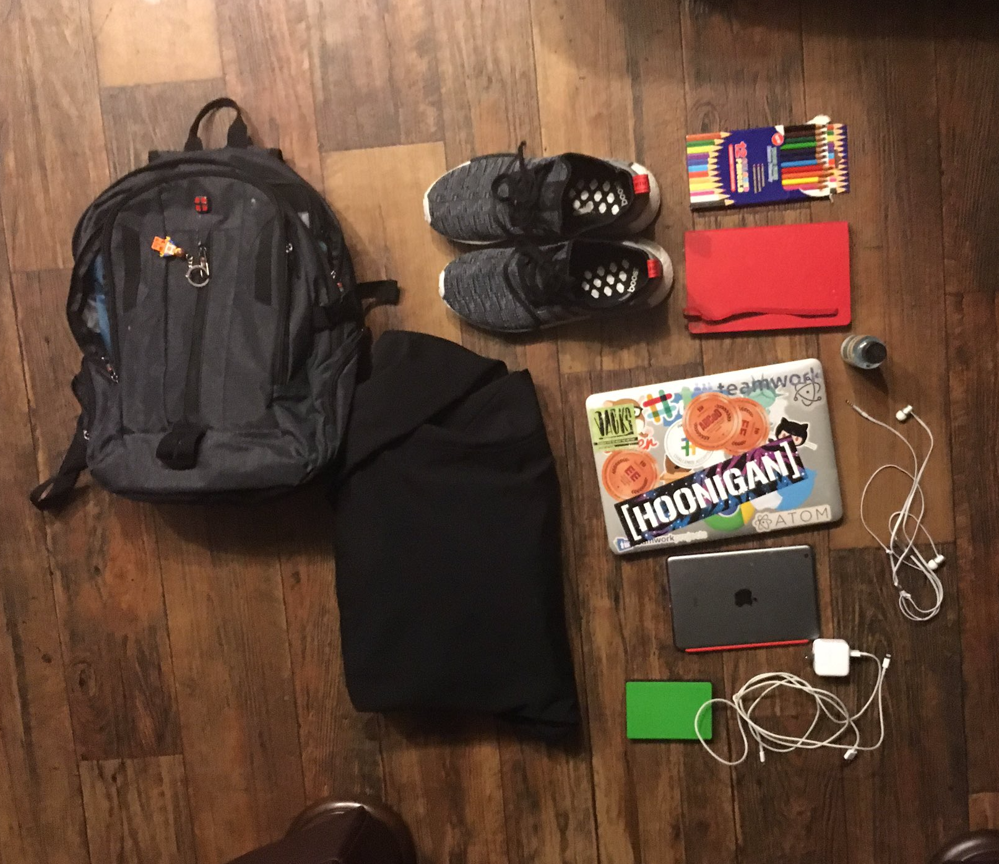

Design and Machine Learning
Part of my fourth year project for college. On flitering systems and designing a web tools for children and parents.
Introduction to Firebase
Talk in how to use and benfits of Firebase. Was done at Austin Texas meetup July 2016
Computer Science notes
Notes, slides and answers for all the classes I took while doing computer science In Cork Institute of Technology
Web Accessibility and OpenDyslexia
There are few published papers about usability testing with dyslexia focused fonts, but there is a considerable collection of knowledge on dyslexia as well as many suggestions for authoring dyslexia friendly interfaces.

Problems Posed by Ad-blockers
Browsing the web without ads or popups stealing your screen or auto playing video ads making the page load as slowly as if it were being dialed up in the 1990s is a pleasant experience, so it’s understandable that so many people these days choose to use ad blockers when surfing the internet. But what problems are posed to businesses by using ad-blockers?
- 
Whats in my Bag
I recently read a book about the minimal life. I'm no hipster and I are a white privilege Irish man. But I thought I would write about I need to do my day to day life.